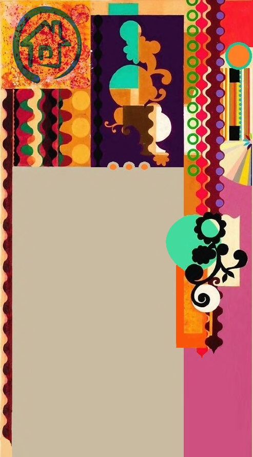
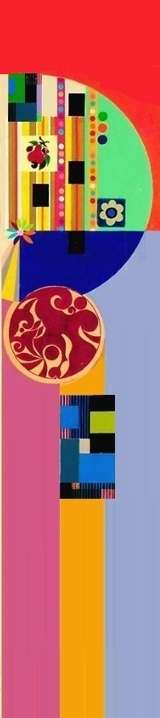
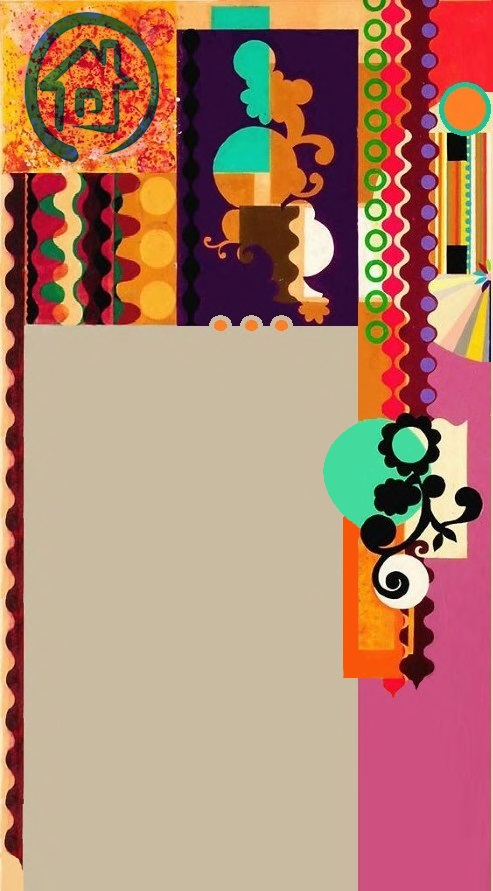
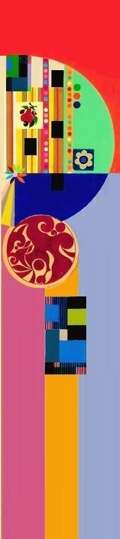

Модернизм в изобразительном искусстве возник как продолжение импрессионизма.
Наиболее яркими его направлениями являются: кубизм, экспрессионизм, дадаизм, абстракционизм, футуризм, сюрреализм. Они не похожи и как бы оспаривают друг друга, но в действительности все они возникли одно из другого, являются одним целым и развиваются по одной логической схеме.
Модернизм отрицает культурное наследие и реальное воспроизведение действительности, использует деформацию образов и субъективное восприятие художника, т.е. создает мир внутри рамок картины.
Одним из наиболее противоречивых и новаторских направлений в искусстве является авангардизм, который отрицает действительность, прошлое, эстетические нормы. Он проявляется в модернистских направлениях: дадаизм, экспрессионизм, фовизм, футуризм. Эти направления объявляют отказ от классического искусства, преобладание личного восприятия художника, преобладание формы над содержанием.
Абстракционизм (беспредметное искусство) зародился в начале 20 века, а в конце 20-х годов выделился в самостоятельное направление. Он является продолжением кубизма, экспрессионизма и футуризма. Искажая, ломая изображаемую реальность художник-абстракционист стремится передать на полотне эмоциональное восприятие окружающей действительности. Наиболее яркий представитель этого течения Василий Кандинский назвал абстракционизм «искусством свободы».
В средине 20 века беспредметное искусство распространилось по всему миру и приобрело большое количество сторонников. Поп-арт, или общедоступное искусство, появляется в средине 50-х годов 20 века, а рассвет его приходится на 1960-е годы. В Европе это направление модернизма известно под названием неореализм. Представители поп-арта показывали окружающую среду сочетанием реальных бытовых предметов, обрывков печатных изданий. Искусствоведы находят сходство поп-арта с более ранним направлением модернизма – дадаизмом.
В 1970-1980 гг. поп-арт был вытеснен новой разновидностью авангардистского искусства – оп-артом (оптическим искусством). В работах мастеров оп-арта используются особые калейдоскопические эффекты, абстрактные формы, оптические иллюзии не связанные с реальной действительностью.
Таким образом, задачей своего творчества, модернисты считают изображение форм существующих только внутри искусства, с помощью которых стремятся выразить духовную сущность окружающего мира.
Модернизм всегда вызвал самые противоречивые отклики, и в то же время он остается одним из самых масштабных направлений изобразительного искусства.